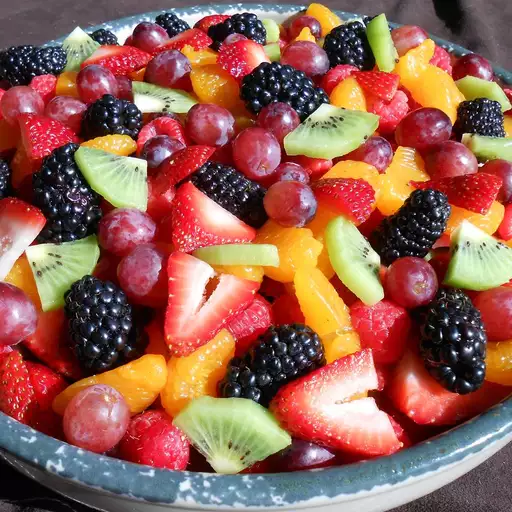

Fruit Salad
Home

This fruit salad recipe is bright, colorful, and incredibly delicious.
This fruit salad is a real "crowd-pleaser" and tends to go fast.
It's a great way to get everyone to eat more fruit.
You can use any type of fruits you like,
but the ones we will use are just a suggestion.
Ingredients
Sauce:
- 1/4 cup honey
- 1/4 cup orange juice
- 1/4 cup lemon juice
- 1 teaspoon lemon zest
- 1 teaspoon orange zest
Salad:
- 2 cups strawberries, hulled and sliced
- 2 cups green grapes
- 2 cups blueberries
- 2 cups pineapple chunks
- 2 cups cantaloupe chunks
- 2 cups mango chunks
- 2 cups kiwi chunks
- 2 cups mandarin orange segments
Directions:
- In a small bowl, whisk together the honey, orange juice, lemon juice, lemon zest, and orange zest. Set aside.
- Place the prepared fruit in a large bowl and gently toss to combine.
- Pour the sauce over the fruit and gently toss to combine.
- Refrigerate for at least 30 minutes before serving.